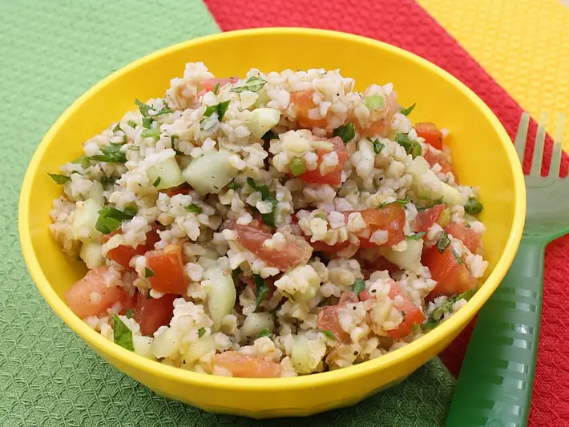

Фото: USDAgov, Public domain
_(20211103-FNS-UNC-6079).jpg){kind=link}
Булгур с овощами
Рассыпчатый булгур с перцем, помидором и морковью
30 мин4 порц.272 ккал на порциюБ 8 · Ж 8 · У 36Средиземноморская кухня
Продукты на 4 порц.
- Булгур1 стак.
- Вода2 стак.
- Лук репчатый1 шт
- Морковь1 шт
- Перец болгарский1 шт
- Помидоры1 шт
- Растительное масло2 ст. л.
- Соль1 ч. л.
- Перец чёрный молотый1 щеп.
- Петрушка по желаниюпо вкусу
Как готовить
- Лук, морковь и перец нарежьте мелкими кубиками, помидор натрите на тёрке.
- Прогрейте масло в сотейнике на среднем огне, обжарьте лук и морковь 5 минут до мягкости.
- Добавьте перец и помидор, готовьте ещё 3 минуты.
- Всыпьте булгур и помешивайте 2 минуты, чтобы зёрна пропитались маслом.
- Влейте горячую воду, посолите и поперчите. Накройте крышкой и варите на слабом огне 15 минут, пока вода не впитается.
- Выключите огонь, дайте постоять 5 минут и посыпьте петрушкой.
Совет. Берите крупный булгур для гарнира, мелкий годится для салата табуле. Соотношение крупы и воды 1 к 2.